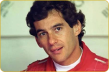
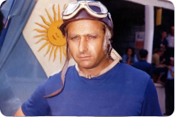
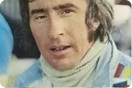

Lendas da Formula 1
Ayrton Senna

Senna transformou a pilotagem em uma arte mística e elevou o nível de exigência física e mental no esporte. Ele redefiniu os limites da agressividade na pista e da pilotagem sob chuva. Sua trágica morte em 1994 foi o estopim para uma revolução total na segurança dos circuitos e carros da F1. Culturalmente, ele transcendeu o automobilismo, tornando-se um ícone global de obstinação.
Michael Schumacher
Schumacher criou o molde do "piloto moderno". Ele foi o pioneiro em tratar a preparação física como atletas olímpicos e em se integrar profundamente à engenharia da equipe (trabalhando horas extras nos boxes para desenvolver o carro).Junto com a Jean Todt e Ross Brawn, transformou a Ferrari dos anos 2000 em uma máquina de vencer implacável, profissionalizando o gerenciamento de equipe a um nível nunca antes visto.
Niki Lauda
Lauda foi a personificação da resiliência e do intelecto calculista. Seu retorno às pistas apenas seis semanas após quase morrer queimado em Nürburgring (1976) é o maior exemplo de força mental da história do esporte. Ele foi o primeiro piloto a exigir salários milionários baseando-se em seu valor comercial. Décadas mais tarde, nos bastidores, foi a mente política que ajudou a construir a dinastia soberana da Mercedes.
Lewis Hamilton
Hamilton quebrou as barreiras da bolha tradicional e predominantemente europeia da F1. Ele usou sua plataforma global para trazer discussões sobre diversidade, sustentabilidade e direitos sociais para dentro do paddock. Além de reescrever o livro de recordes (sendo o maior vencedor e recordista de poles da história), ele expandiu o alcance cultural da categoria, atraindo uma audiência totalmente nova e global.
Juan Manuel Fangio

O "Maestro" dominou a década de 1950, a era mais mortal do automobilismo, correndo com camisas de manga curta e capacetes de cortiça.Fangio provou que o piloto precisava ser um estrategista de bastidores: ele foi campeão por 4 construtoras diferentes (Alfa Romeo, Maserati, Mercedes e Ferrari) simplesmente por saber exatamente quando e para onde mudar de equipe para ter o melhor equipamento.
Jackie Stewart

O escocês usou seu status de tricampeão para travar uma guerra contra a própria organização da F1 em prol da vida dos pilotos. Em uma época em que a morte era aceita como "ossada do ofício", Stewart boicotou pistas perigosas e exigiu macacões antichama, capacetes integrais, equipes médicas de prontidão e barreiras de proteção nos circuitos, salvando dezenas de vidas no futuro.